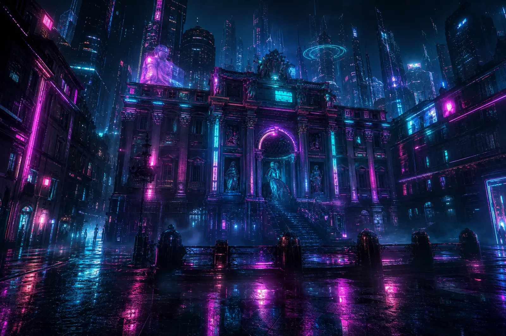
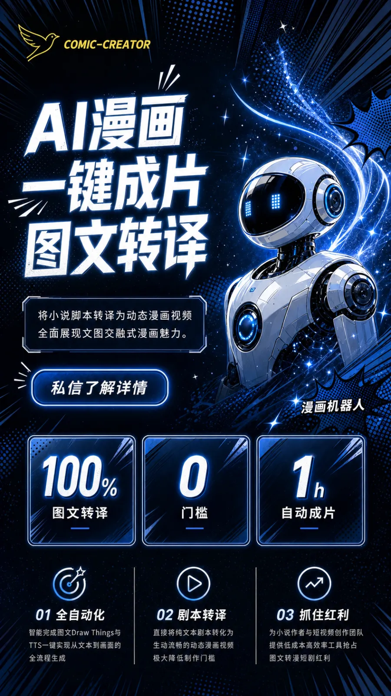

AI 作图
用 AI 激发灵感，快速生成高质量图片
提示词
科技焕肤 · 逆龄新生，高级感美业海报，金色光效，9:16 竖版，留白标题区，柔光质感，主体居中，氛围高级，适合朋友圈与门店屏幕投放
62 / 500
清空
引擎
Nano Banana 2
快·中文好 ·
10点
✦推荐
Nano Banana Pro
精品·最强中文/4K ·
18点
gpt-image-2
OpenAI·写实/局部改 ·
12点
泽龙AI
实惠·偏不稳 ·
8点
比例
9:16
1:1
16:9
3:4
清晰度
标准
高清
生成数量
1
2
4
参考图
(可选 · 上传后变「图生图」，在参考图基础上改)
上传


立即生成（10 点）
本次预计消耗
10
点 · 失败自动退点
生成结果
9:16
再生成
继续改
转视频
发飞书
下载
入库
最近作品
全部作品
还没有作品，生成第一张吧